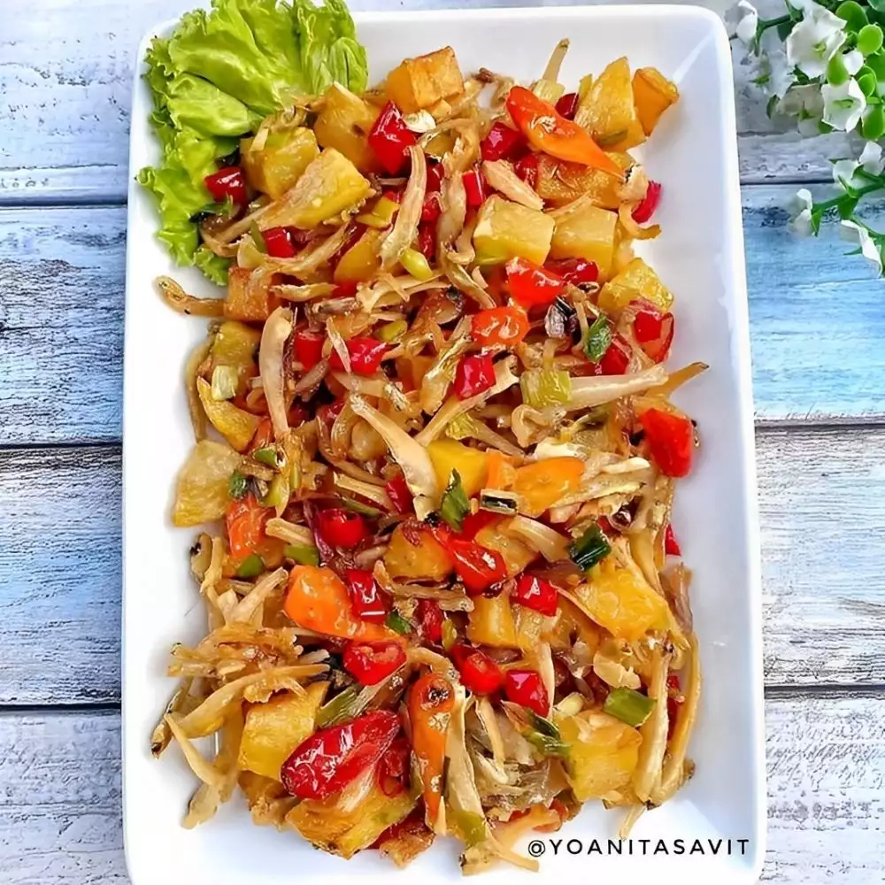

1. Oseng teri kentang

Bahan:
- 3 buah kentang
- 150 gr ikan teri asin
- Garam, gula, dan kaldu bubuk secukupnya
Bumbu iris:
- 7 siung bawang merah
- 3 siung bawang putih
- 5 buah cabai merah
- 8 buah cabai rawit merah
- 2 batang daun bawang
Cara membuat:
1. Kupas kentang, lalu potong dadu dan goreng hingga matang. Sisihkan.
2. kemudian bilas ikan teri lalu goreng hingga matang. Sisihkan.
3. Panaskan sedikit minyak lalu tumis bawang merah dan bawang putih hingga harum. Kemudian masukkan cabai dan tumis hingga harum.
4. Masukkan kentang, ikan teri, dan daun bawang. Lalu bumbui dengan garam, gula dan kaldu bubuk secukupnya. Aduk rata.
5. Jangan lupa koreksi rasa, jika sudah pas angkat dan siap disajikan.